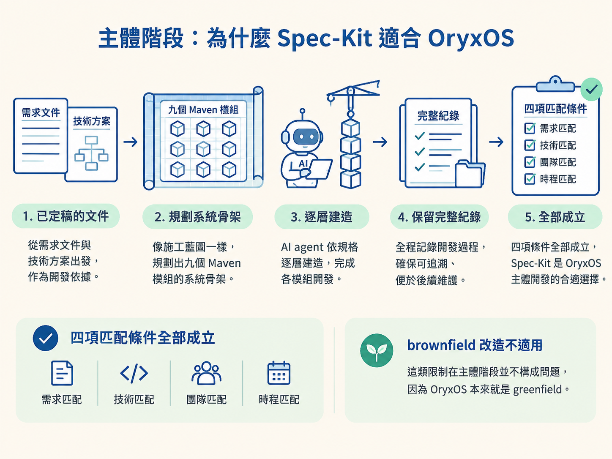

完成本節後，你應該能判斷什麼工作適合 Spec-Kit、什麼工作適合手動提示詞，並說明為什麼「兩階段混合模式」是 OryxOS 的合理選擇。
OryxOS 的需求文件與技術方案都已經定稿。接下來真正棘手的問題是：怎麼把這些文件轉成一個能編譯、能執行的系統？
直覺上，你可能會想找一套最強的工具，從第一行程式碼一路用到最後。但軟體工作的性質會改變：從零建立底座時，每個決定都可能牽動其他模組；系統完成後，日常工作往往只是修一個 bug、加一個擴展，或修改一到三個檔案。
這兩種工作就像蓋房子和換門把：前者需要藍圖、施工順序與完整紀錄，後者需要的是快速而準確的局部修改。硬把兩者塞進同一套流程，反而會讓工具變成負擔。
因此，OryxOS 採用兩階段混合模式：主體開發使用 Spec-Kit，增量開發改用手動提示詞搭配 Claude Code。核心原則只有一句：工具選擇必須匹配工作的性質。
Spec-Kit 適合的情境很明確，而且需要同時符合幾個條件：中大型的 greenfield（從零開始）專案、需求清楚、由 AI agent 主導開發，以及團隊有意學習一套方法論。
只要缺少其中一項，Spec-Kit 的完整流程就可能從保護欄變成手煞車。把這些條件套回 OryxOS，可以看到它幾乎全部符合：
| 匹配條件 | OryxOS 的實際狀況 |
|---|---|
| 中大型 greenfield | 專案完全從零開始，包含九個 Maven 模組，不是玩具專案 |
| 需求清楚 | 需求文件與技術方案都已定稿，Spec-Kit 要做的是「轉換」，不是重新發想需求 |
| AI agent 主導開發 | 以 Claude Code 作為主要開發者 |
| 方法論場景 | OryxOS 本身就是要示範 SDD 如何落地 |
四項條件全部成立，所以 Spec-Kit 是 OryxOS 主體開發的合適選擇。至於「brownfield 改造不適用」這類限制，在這個專案的主體階段並不構成問題，因為 OryxOS 本來就是 greenfield。

主體完成五個核心能力後，剩下的工作大多會縮小成一到三個檔案的局部修改，例如加入一個擴展、修正一個 bug，或寫一個小工具。
這類工作的上下文已經不是「一份等待實作的新 spec」，而是目前已存在的程式碼。驗證方式也很直接：修改、執行測試，接著送出 PR。
它通常具備三個特徵：
如果這時仍然完整走過 specify → plan → tasks → implement，就像只換門把卻重新畫一次整棟房子的施工圖：流程本身沒有錯，但成本已經超過工作價值。
因此，增量階段改用手動提示詞模式。直接在 Claude Code 中描述要修改的內容，完成修改後執行測試，再送出 PR，不另外產出正式的 spec 與 plan 文件。
主體階段留下的 constitution 與 spec 仍然有用，但角色改變了：它們成為參考基準，而不是每次改動都必須重新跑一遍的流程。
選擇 Spec-Kit，不代表它沒有代價。它的限制要先看清楚，才能知道哪些問題要靠流程調整，哪些問題根本不適合交給它。
| 局限 | 應對方式 |
|---|---|
| 對小型增量工作而言太重 | 分階段使用：主體開發採用 Spec-Kit，增量開發改用手動提示詞 |
| spec 不會自動同步 | 在 tasks 之後、implement 之前執行 /speckit.analyze，檢查規格是否已經漂移 |
| context 上限可能讓大型 brownfield 專案失敗 | OryxOS 是 greenfield，因此這項限制不適用於目前情境 |
| Spec-Kit 本身迭代速度很快 | 不要鎖死版本細節，依照官方文件使用 |
另一份教學也把 Spec-Kit 放進更大的工具版圖中：它是 GitHub 開源的規格驅動開發工具鏈，2026 年成長最快的開發工具之一，支援二十多種 AI agent。
但它終究是一把「重武器」。它適合需求清楚的中大型 greenfield，卻不適合小型改動、快速原型、單檔修改、大型 brownfield 或探索性研究。這正是 OryxOS 需要兩階段模式的原因：不是哪一套工具永遠最好，而是不同階段需要不同重量的工具。
記住這個節點的第一個判斷：工作性質決定工具，不是工具決定工作性質。